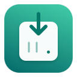

UGREEN NAS Download
Configurez une fois votre compte. Les prochains envois se feront directement depuis Safari.
Vérifiez l’empreinte SHA-256 par une source de confiance avant la première connexion. Les mots de passe et jetons ne sont jamais conservés dans le stockage web de l’extension.